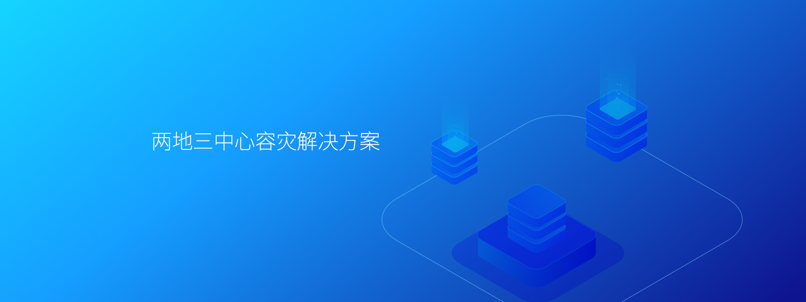
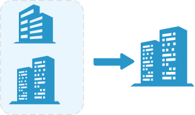
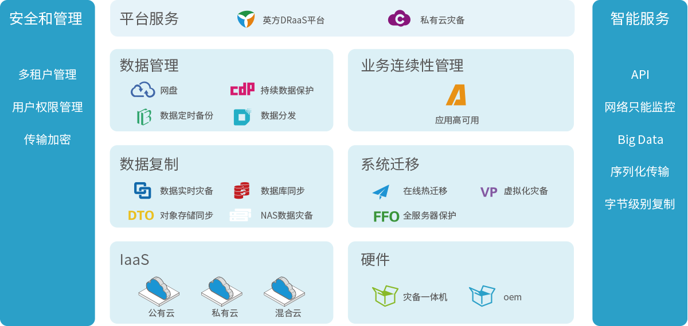

方案简介
伴随着业务量的激增和业务业务连续性重要性的提升，传统的单数据中心已难以抵御地域性灾难及突发事件对，企业数据的安全和业务连续性，而只做本地的数据冗余保护或容灾建设，已不能规避区域性灾难对企业数据的破坏。因此包括再同城备份中心进行应用级容灾，在异地灾备中心作为全部数据级灾备和部分应用级灾备的两地三中心架构，逐渐成为当下最有效的数据及业务保护架构之一。
两地三中心定义

容灾产品矩阵

两地三中心七大优势
全图形化监控及业务操作管理，所图即所见。
提供政务云迁移与业务级别容灾解决方案，支持软件定义及基于云平台的两地三中心模式。
良好的兼容性。支持多个操作系统、应用软件、数据库、中间件的异构搭建。
按需使用，灵活扩容。
优异的远距离数据传输技术，带宽占用低，且实现了数据传输加密。
数据层